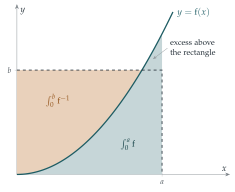

STEP III 2011, Question 4
Read the question before you go on. It is in the STEP Support Programme’s question database: step.maths.org/questions/11-s3-q4
The hook
Here is an inequality proved by a picture so simple that it fits on a postage stamp. Draw an increasing curve through the origin. The area under it, plus the area to its left, always covers a rectangle. From that one observation comes Young’s inequality, \(ab \leq \frac{a^p}{p} + \frac{b^q}{q}\), which in turn is the key to Hölder’s inequality and the Cauchy–Schwarz inequality, two of the most important tools in analysis.
The picture also contains a deeper idea. It pairs a function with its inverse in a perfectly symmetric way, and that pairing, generalised, is the Legendre transform, which connects the two great formulations of classical mechanics and the two main descriptions of thermodynamics.
Before you start
\(\int_0^a \mathrm{f}(x)\,\mathrm{d}x\) is the area between the curve and the \(x\)-axis. What area does \(\int_0^b \mathrm{f}^{-1}(y)\,\mathrm{d}y\) represent on the same picture?
The graph of \(x = \mathrm{f}^{-1}(y)\) is the same curve as \(y = \mathrm{f}(x)\), viewed sideways. So \(\int_0^b \mathrm{f}^{-1}(y)\,\mathrm{d}y\) is the area between the curve and the \(y\)-axis, from height \(0\) to height \(b\). With that, part (i) is a matter of drawing.
Working it through
Stage 1 The picture
Draw the rectangle with corners \((0, 0)\) and \((a, b)\). Shade the region under the curve from \(0\) to \(a\) in one colour and the region to the left of the curve from \(0\) to \(b\) in another. Do the two regions cover the rectangle? When is there no overlap and no excess?
The two regions together cover the whole rectangle \([0, a] \times [0, b]\), and usually some area outside it as well (Figure 3.4.1). Every point \((x, y)\) of the rectangle is either below the curve (so in the first region, since \(x \leq a\)) or to the left of it (so in the second, since \(y \leq b\)). The total shaded area is therefore at least the area of the rectangle, \(ab\). That is \((*)\).

The excess is the small curved region between the curve and the corner of the rectangle. It disappears exactly when the curve passes through the corner \((a, b)\), that is, when \[b = \mathrm{f}(a).\]
Stage 2 Young’s inequality
With \(\mathrm{f}(x) = x^{p-1}\), what is \(\mathrm{f}^{-1}(y)\)? Compute both integrals, and use \(\frac1p + \frac1q = 1\) to tidy the second.
Since \(p > 1\), \(\mathrm{f}(x) = x^{p-1}\) is continuous and increasing with \(\mathrm{f}(0) = 0\), and \(\mathrm{f}^{-1}(y) = y^{1/(p-1)}\). Then \[\int_0^a x^{p-1}\,\mathrm{d}x = \frac{a^p}{p}, \qquad \int_0^b y^{1/(p-1)}\,\mathrm{d}y = \frac{b^{1 + 1/(p-1)}}{1 + 1/(p-1)}.\] From \(\frac1p + \frac1q = 1\) we get \(q = \frac{p}{p-1}\), so \(1 + \frac{1}{p-1} = \frac{p}{p-1} = q\), and the second integral is \(\frac{b^q}{q}\). So \((*)\) becomes \[ab \leq \frac{a^p}{p} + \frac{b^q}{q}. \qed\] Equality should hold when \(b = \mathrm{f}(a) = a^{p-1}\). Check: then \(ab = a^p\), and \(b^q = a^{(p-1)q} = a^p\), so the right-hand side is \(a^p\bigl(\frac1p + \frac1q\bigr) = a^p\).■
With \(p = q = 2\) this is \(ab \leq \frac{a^2 + b^2}{2}\), the two-number AM–GM inequality of Section 3.2 in disguise.
Stage 3 An inverse sine
Now take \(\mathrm{f}(x) = \sin x\) on \([0, \frac\pi2]\), which is continuous and increasing with \(\mathrm{f}(0) = 0\), and \(\mathrm{f}^{-1} = \arcsin\) on \([0, 1]\).
\(\int_0^a \sin x\,\mathrm{d}x\) is easy. How would you integrate \(\arcsin y\)?
\(\int_0^a \sin x\,\mathrm{d}x = 1 - \cos a\). For the inverse sine, integrate by parts with \(\arcsin y \times 1\): \[\int_0^b \arcsin y\,\mathrm{d}y = \Bigl[ y\arcsin y \Bigr]_0^b - \int_0^b \frac{y}{\sqrt{1 - y^2}}\,\mathrm{d}y = b\arcsin b + \sqrt{1 - b^2} - 1.\] Adding, \((*)\) gives \(ab \leq b\arcsin b + \sqrt{1 - b^2} - \cos a\).■
Now deduce the inequality for \(\arcsin(t^{-1})\). Which value of \(a\) should you choose? (Try the simplest possible one.)
Take \(a = 0\): then \(0 \leq b\arcsin b + \sqrt{1 - b^2} - 1\), that is, \(b\arcsin b \geq 1 - \sqrt{1 - b^2}\). (This is just the statement that \(\int_0^b \arcsin y\,\mathrm{d}y \geq 0\).) Put \(b = 1/t\) with \(t \geq 1\), so \(0 < b \leq 1\), and divide by \(b\): \[\arcsin\left(\frac1t\right) \geq t\left(1 - \sqrt{1 - \frac{1}{t^2}}\right) = t - \sqrt{t^2 - 1}. \qed\]
Looking back
A picture as a proof. Part (i) is a complete proof once you see the right picture. Translating a geometric fact into an inequality between integrals is a powerful technique.
Specialise a general result. One general inequality, with different choices of \(\mathrm{f}\), gave Young’s inequality and an inequality for \(\arcsin\).
The simplest choice can be the right one. The final deduction used \(a = 0\), where the inequality is almost trivial. Always try the easy cases.
What’s really going on
William Henry Young published his inequality in 1912. Its importance comes from what it leads to. Suppose \(\sum a_i^p = 1\) and \(\sum b_i^q = 1\). Applying Young to each pair and adding, \[\sum a_i b_i \leq \frac{\sum a_i^p}{p} + \frac{\sum b_i^q}{q} = \frac1p + \frac1q = 1.\] Scaling the \(a\)s and \(b\)s to make the sums \(1\) gives Hölder’s inequality: for positive numbers, \[\sum a_i b_i \leq \Bigl(\sum a_i^p\Bigr)^{1/p} \Bigl(\sum b_i^q\Bigr)^{1/q}.\] With \(p = q = 2\) this is the Cauchy–Schwarz inequality, \(\sum a_ib_i \leq \sqrt{\sum a_i^2}\sqrt{\sum b_i^2}\), which says that the cosine of the angle between two vectors is at most \(1\). Hölder’s inequality is the foundation of the theory of \(L^p\) spaces, spaces of functions in which “distance” is measured by \(\bigl(\int |f|^p\bigr)^{1/p}\), and which you will meet in courses on functional analysis and probability.
The Legendre transform
The picture in Figure 3.4.1 treats \(\mathrm{f}\) and \(\mathrm{f}^{-1}\) completely symmetrically. Write \(F(a) = \int_0^a \mathrm{f}\) and \(G(b) = \int_0^b \mathrm{f}^{-1}\). The inequality says \(F(a) + G(b) \geq ab\), with equality on the curve, so \[G(b) = \max_a \bigl( ab - F(a) \bigr).\] This operation, turning a convex function \(F\) into a new convex function \(G\), is the Legendre transform, and applying it twice gets you back to \(F\). In mechanics it converts the Lagrangian, a function of position and velocity, into the Hamiltonian, a function of position and momentum: two equivalent formulations of Newton’s laws that you will meet in a second-year course. In thermodynamics it converts between energy, enthalpy and free energy. For \(F(a) = a^p/p\) the transform is \(G(b) = b^q/q\), which is why the two exponents in Young’s inequality are linked by \(\frac1p + \frac1q = 1\).
The thinking skill
An integral is an area. Comparing areas in a well-chosen picture can prove an inequality that is hard to see algebraically.
Look for pictures in which one region obviously contains another, or several regions obviously cover a third. Then translate each area into an integral.
Try this next
The 1987 version. Try STEP I 1987, Question 6. It uses the same kind of picture to integrate an inverse function. Check your answer by differentiating.
Cauchy–Schwarz. Use Young’s inequality with \(p = q = 2\) to prove \(a_1b_1 + a_2b_2 + a_3b_3 \leq \sqrt{a_1^2 + a_2^2 + a_3^2}\,\sqrt{b_1^2 + b_2^2 + b_3^2}\) for positive numbers. (Hint: first deal with the case where both square roots equal \(1\).)
An exponential version. Take \(\mathrm{f}(x) = e^x - 1\) in \((*)\) to show that, for \(a, b \geq 0\), \[ab \leq e^a - 1 - a + (1 + b)\ln(1 + b) - b.\] When is there equality?
How good is the bound? harder Use a calculator to compare \(\arcsin(1/t)\) with \(t - \sqrt{t^2 - 1}\) for \(t = 1, 2, 10\). Show that for large \(t\), \(t - \sqrt{t^2 - 1} \approx \frac{1}{2t}\) while \(\arcsin(1/t) \approx \frac1t\). Why is the bound off by a factor of \(2\)? (Look at the picture with \(a = 0\): how much of the excess is wasted?)
Further reading
J. Michael Steele, The Cauchy–Schwarz Master Class (Cambridge University Press). Chapters 1 and 9 cover Cauchy–Schwarz and Hölder, with Young’s inequality along the way.
Roger Nelsen, Proofs Without Words (Mathematical Association of America). Includes Young’s inequality and many other picture proofs.
V. I. Arnold, Mathematical Methods of Classical Mechanics (Springer). Section 14 explains the Legendre transform with exactly this picture. Advanced, but the relevant section is short.